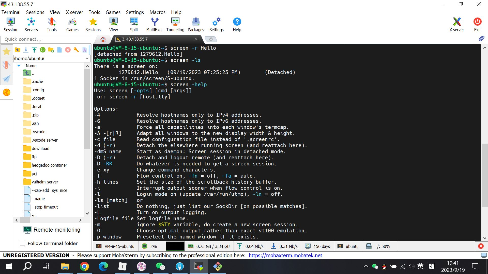

有些Linux命令或者参数还是蛮有用但是不常用的，需要记录一下，这样就不用到处找了。
SCREEN（后台挂起）
1
2
3
4
5
6
7
8
9
10
11
12
13
| # 查询screen提示
screen -help
# 使用screen -R命令，如果不存在则创建一个screen，如果存在则会直接进入
# 使用-S创建和直接输入screen创建的虚拟终端，不会检录之前创建的screen
screen -R Name
# -r不会创建，只会进入
screen -r [pid/name]
# 查看在后台运行的终端
screen -ls
# 退出终端并释放资源，在screen内使用
exit
# 使用-R/-r/-S均可，释放资源，在terminal使用
screen -R [pid/Name] -X quit
|

SCREEN绑定键
在虚拟终端内，输入Ctril + a将等待接受预先设置的绑定键，这个时候可以输入对应的一些命令，来操作虚拟终端，如：
- d：保存会话，后台运行改虚拟终端，返回terminal
- k：关闭对话，等同输入：
exit
- c：新建一个虚拟终端
- ?：显示所有绑定键盘
crond 命令每分钟会定期检查是否有要执行的工作，如果有要执行的工作便会自动执行该工作。
1
2
3
4
5
6
7
8
| crontab [ -u user ] file
crontab [ -u user ] { -l | -r | -e }
-u user：用来设定某个用户的crontab服务
-e : 执行文字编辑器来设定时程表，内定的文字编辑器是 VI，如果你想用别的文字编辑器，则请先设定 VISUAL 环境变数来指定使用那个文字编辑器(比如说 setenv VISUAL joe)
-r : 删除目前的时程表
-l : 列出目前的时程表
cat /etc/crontab
|
直接使用 crontab -e 进入编辑模式即可新建任务，每个任务格式如下：
1
2
3
4
5
6
7
| m h dom mon dow command
| | | | |
| | | | +----- 星期中星期几 (0 - 6) (星期天 为0)
| | | +---------- 月份 (1 - 12)
| | +--------------- 一个月中的第几天 (1 - 31)
| +-------------------- 小时 (0 - 23)
+------------------------- 分钟 (0 - 59)
|
SHELL
1
2
3
4
5
| uat: 182.119.78.15
uat2: 182.214.14.217
uatc: 182.214.93.115
查tranCode=MUIP0643 & key=cache_dispatcher_
增/改tranCode=MUIP0642 & key=cache_dispatcher_ &value
|
1
2
3
4
5
| while read line
do
echo $line
array=(${line// / })
done < test.txt
|